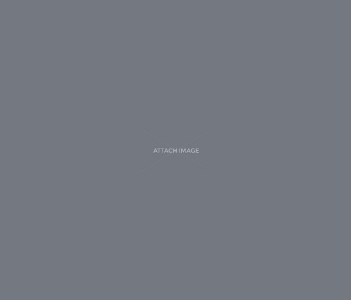
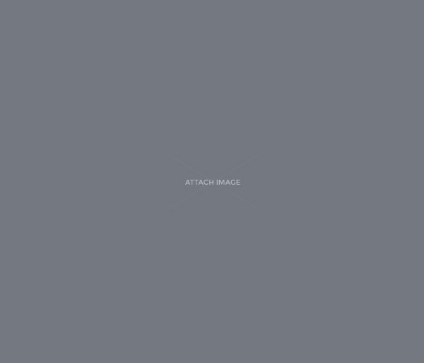

History
ARAHAM SHARON
Funded 70 units of cow farm
ABRAHAM SHARON Started watching goat farm in ogun state
Farm Details
Abraham Sharon received profit on LAMB FARM IN CALABAR
Farm Details.

Funded 70 units of cow farm
Farm Details
Farm Details.
Are you here?
09:00This message is pre-queued.
09:25Whohoo!
09:26Do you like it?
09:27I am going out.
08:21Call me when you see this message.
08:27